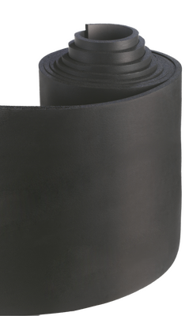

☎ 0216 344 48 19

108X19 MM DYNAFLEX RUBBER BORU İZOLASYON (18 metre) Boru İzolasyon Dynaflex, soğutma & iklimlendirme borular & bağlantı elemanları yedek parçası/ekipmanı. Model uyumu ve hızlı tedarik için ürün kodunu iletin; KlimaSun güvencesiyle temin edilir.
| Ürün Kodu | 108X19 MM DYNAFLEX RUBBER BORU İZOLASYON (18 metre) Boru İzolasyon Dynaflex |
|---|---|
| Marka | Dynaflex |
| Alt Kategori | Borular & Bağlantı Elemanları |
| Özellik | Dynaflex |
| Temin Durumu | Temin Edilebilir |
Sıfır ürünlerde üretici garantisi; revizyonlu / 2.el ünitelerde ürüne göre 6–12 ay Klimasun garantisi. Kapsam teklifte belirtilir.
Stoktaki ürünler aynı iş günü kargoya verilir; stokta olmayanlar Almanya ve İtalya'dan sipariş üzerine orijinal olarak temin edilir.
2004'ten beri endüstriyel iklimlendirmede Erdinç Klima güvencesi; F-Gaz / EKOMVET yetkinliği, kurumsal e-fatura ve teknik destek.
Bu model için yedek parça ve muadil seçenekleri için kodu bize iletin: Dynaflex ürünleri · muadil ürünler · servis & bakım.
Evet. Dynaflex 108X19 MM DYNAFLEX RUBBER BORU İZOLASYON (18 metre) Boru İzolasyon Dynaflex arızalı ünitelerine bakım, kompresör değişimi, gaz şarjı ve revizyon dahil servis veriyoruz.
Stok durumuna göre sıfır, revizyonlu 2. el veya sipariş üzerine temin edilebilir. Teklif formundan sorabilirsiniz.
Uygun muadil / eşdeğer ürünler için kodu bize iletin; güncel Rittal ve MKS Clima muadilleri önerilir.
